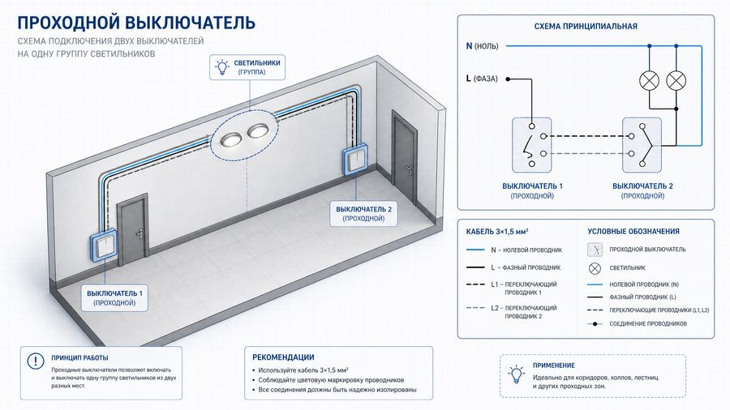
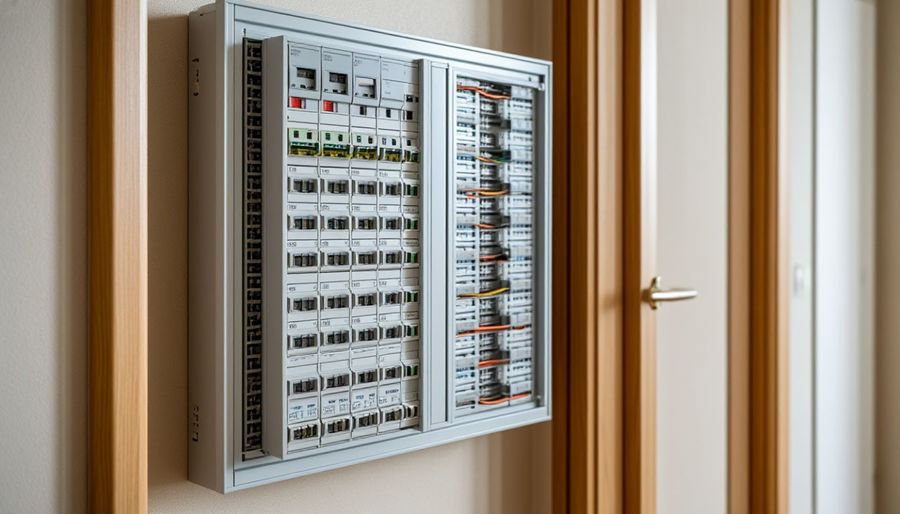

для прихожей 6 м² закладывайте 4–6 розеток (2 у пола, 2 в шкафу, 1 у щитка, 1 запасная), 2–3 группы света с проходным выключателем и щиток на 24–36 модулей. Высота розеток — 250–300 мм, выключателей — 900–1000 мм. Ошибка с местом щитка стоит 15 000–40 000 руб. на переносе. Ниже — схема, смета, ошибки и чек-лист.

Сколько розеток нужно в прихожей и где их ставить
Минимум по СП 256.1325800.2016 — 1 розетка на 10 м² коридора. Но для семьи из 3–4 человек этого мало: реальная потребность — 4–6 гнёзд.
Что питается от розеток в прихожей
- Робот-пылесос на базе — 30–70 Вт
- Вертикальный пылесос на зарядке — 200–700 Вт
- Роутер и репитер Wi-Fi — 10–20 Вт
- Сушилка для обуви — 20–60 Вт
- Отпариватель — 1500–2000 Вт (редко, но нужен запас)
- Зеркало с подсветкой — 20–40 Вт
Высоты и привязки
| Точка | Высота от пола | Комментарий |
|---|---|---|
| Розетки у пола | 250–300 мм | Для пылесоса и сушилки обуви |
| Розетка в шкафу (роутер) | 1900–2100 мм | На верхней полке, доступ через дверцу |
| Розетка у щитка | 300 мм | Для ремонтных нужд и зарядки инструмента |
| Выключатели у входа | 900–1000 мм | Со стороны ручки двери, 100–150 мм от наличника |
Совет: сначала согласуйте схему шкафа с мебельщиком. Если розетка попадёт за боковину или ящик — перенос после сборки обойдётся в 4 000–8 000 руб.
Освещение прихожей: расчёт и сценарии
Прихожая без окна — свет работает «за дневной». Норма для коридоров — 100–150 лк, у зеркала — 200–300 лк.
Расчёт для 6 м²
- Минимум: 6 × 100 = 600 лм
- Комфорт: 6 × 150 = 900 лм
- С запасом на тёмную отделку: 1080–1170 лм
Два светильника по 9 Вт (800 лм каждый) дадут 1600 лм — хороший запас для прихожей с тёмными стенами.
Сценарии и проходной выключатель
Для длинного коридора (4–5 м) делайте управление светом из двух мест: проходной выключатель у входа и у выхода в жилую зону. Схема стандартная — два переключателя и 3-жильный кабель между ними.
Электрощит в прихожей: размер, место, слаботочка
Щиток — сердце электрики. Ошибка с размером оборачивается пересборкой за 8 000–25 000 руб..
Сколько модулей нужно
- Вводной автомат + реле напряжения — 4 модуля
- УЗО или дифавтоматы — 4–8 модулей
- Групповые автоматы (8–12 групп) — 8–12 модулей
- Запас 20–30% — ещё 4–8 модулей
Итог: для квартиры 52 м² берите щит на 36 модулей. Для 1–2 комнат хватит 24.
Слаботочный шкаф
Роутер, домофон, NAS, умный дом греются. В глухом шкафу летом будет на 8–12 °C теплее комнаты. Нужна вентиляция 20–30 мм и 2 розетки 230 В.
Норматив: щиток нельзя размещать над жилыми комнатами и санузлами. Дверца должна открываться минимум на 95°.

Смета: сколько стоит электрика в прихожей 6 м²
| Работа | Объём | Цена |
|---|---|---|
| Проект и схема | 1 комплект | 3 000–8 000 руб. |
| Штробление | 12–18 м | 6 000–18 000 руб. |
| Прокладка кабеля | 25–45 м | 4 000–12 000 руб. |
| Монтаж точек | 6–9 шт. | 4 200–12 000 руб. |
| Сборка щита | 12–24 модуля | 12 000–35 000 руб. |
| Тёплый пол (опция) | 1 группа | 4 000–10 000 руб. |
Итого без щита и тёплого пола: 22 000–48 000 руб. работа + 12 000–28 000 руб. материалы.
С щитом и тёплым полом: 55 000–130 000 руб.
Частые ошибки и цена исправления
| Ошибка | Последствие | Цена исправления |
|---|---|---|
| 1 розетка на всю прихожую | Удлинитель в проходе | 8 000–20 000 руб. |
| Нет проходного выключателя | Возврат через весь коридор | 10 000–25 000 руб. |
| Щиток на 18 модулей | Автоматы вплотную, нет запаса | 14 000–45 000 руб. |
| Розетки за шкафом | Доступ 0% | 8 000–18 000 руб. |
Чек-лист перед штроблением
- Замерьте прихожую и мебель: шкаф 500–600 мм, обувница 250–350 мм.
- Заложите минимум 4 гнезда, комфортно — 6.
- Выключатели — 900–1000 мм, розетки — 250–300 мм.
- Для коридора длиннее 4 м — проходной выключатель.
- Щиток с запасом 20–30% модулей.
- Тёплый пол — отдельной линией, не под шкаф.
- Сфотографируйте трассы с рулеткой до заделки штроб.
Вопросы и ответы
Сколько розеток нужно в прихожей 4 м²?
Минимум 2 двойные (4 гнезда). Комфортно — 5–6 с учётом роутера, зарядок и сушилки для обуви.
На какой высоте ставить выключатель у входной двери?
900–1000 мм от чистого пола, 100–150 мм от наличника со стороны ручки двери.
Можно ли объединить розетки прихожей с комнатой?
Технически да, но если в прихожей роутер и NAS — лучше отдельная линия 3×2,5 мм² с автоматом 16 А.
Нужен ли отдельный автомат на свет в прихожей?
Да, свет выделяют в отдельную группу 3×1,5 мм² с автоматом 10 А. Это упрощает обслуживание и независимое отключение.
Где нельзя размещать электрощит в квартире?
Над жилыми комнатами, санузлами и в сырых помещениях. Дверца должна открываться минимум на 95°, доступ — свободный.
Источники
Материал подготовлен с опорой на следующие документы и данные:
Дисклеймер
Материалы журнала «Ремонт на примерах» носят информационный характер. Приведённые цены, сроки и нормативы являются ориентировочными: они зависят от региона, состояния объекта, уровня исполнителей и текущей рыночной ситуации, поэтому не могут служить точной сметой или гарантией результата. Перед началом работ проконсультируйтесь со специалистами и проверяйте актуальные требования нормативных документов. Редакция не несёт ответственности за решения, принятые на основании этих материалов.